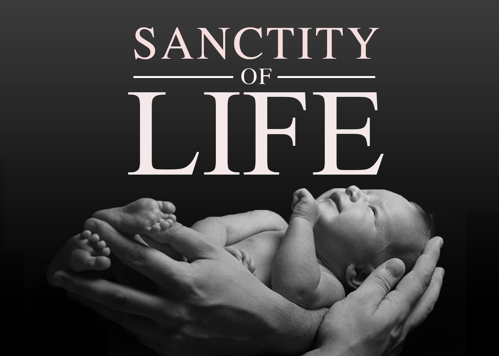

Journey to Joyful Marriage
In this chapter 34 I have learned so many great example of family values we can apply to anyone around us but
specially in our family. Such as Sanctity of life, Maturnal nurturing, family compassion,
family forgiveness towards each other. Having an Open communication with anyone who face hard decision or
challanges in life, we will able help them by sharing family values I listed above.
Sanctity of life: In Chapter 34, I came through some of the great stories about sharing Sanctity of life.
In my personal example, when we come accross any couples that go through any problems of killing a baby or
known as abort the baby due to the couples issues like financial issues or couples issues.
Sharing this proclamation teachings
to the world-wide or anybody around us will help everyone or couples that go through any issues like this.
"We affirm the sanctity of life and of its importance in God's eternal plan. . . . Children are entitled
to birth within the bonds of matrimony and to be reared by a father and a mother who honor marital
vows with complete fidelity" (Hawkwins, ch34, p. 362). Therefore, children must born in parents that honor marital vows.
Through an open communication with them, we are able shared this to them for letting them choose the right
decision. I am so grateful for the church teachings that help me and you to apply these principles in our family to increase
our family bond.

Maturnal nurturing: In Mother parenting role, some childrens feels like complaints about their parent's
overbearing, overprotective, and hypercritical. By avoiding this issues, parents and the children
must have an open communication to share thoughts about this issues and figure out how they avoid this issues.
As I studied the proclamation principle mentioned in chapter 34, there was a quotes mentioned by Mary as she shared her personal story.
“Mothers are primarily responsible for the nurture of their children” (Mary, ch34, p. 326) and She pointed out why
mothers sometimes seem overbearing because they care so deeply for the happiness of their children
and their Godgiven responsibility to “rear their children in love and righteousness”(Mary, ch34, p. 326).
So maturnal nurturing, parents or Mother must provide the needs of their children. Like
cook good food, cleaning, provide clean clothing, teach them, include them in family life,
encourage, teach and play with, and provide protection.
Family compassion: In this chapter, Father parenting role was mentioned. We all know that father is very strict
in every family, because father is the head of the family. In my personal experience, I have a cousin that is
addicted to pornography and his father is so strict and he could actually throw him outside the house when he
finds out about his son's addiction. One night we had a family home evening, we gathered together and I was
assigned to offer a small short spiritual thoughts. I shared about reach out in compassion which was one of the
article in
(Liahona, 2018)
. I summarized the article and shared them about Jesus Christ our Savior, he
showed compassion to the people that he healed during his mission. No matter how unworthy the people,
our Savior healed them with compassion, love, and kindness. Our Heavenly Father wants His children to be
compassionate (1 Corinthians 12:25-27). To become true disciples, we must develop
and show compassion to others, especially to those in need (D&C 52:40). Therefore, I let my cousin's father
know about the issues during our open communication with him and give him a remindful advice from the
article that he should teach him with compassion. So in the end he understand and willing to help his son
with an open communication with him, together with applying compassion.
Family Forgiveness: Applying family forgiveness in family and towards each member of the family, will
enhance the family relationship bond stronger and firm. As Hawkwins mentioned some of the stories about
this proclamation teachings. He stated out a story between three sister that the younger sister stole
the car key of the middle sister name Maggie, and she sneaked out and had an enjoyed ride till she got
pulled over by the police. Then Trisha the younger sister told the police the wrong information about
mentioned Maggie's name. Maggie recieved speeding ticked arrived in her email and she got mad and decided
to not forgive her younger sister Trisha. Trisha then called her eldest sister name Anna and shared with
her the unforgivable thoughts towards her younger sister Trisha. Anna told her "that she had a
spiritual duty to forgive all and that harboring this anger and resentment would only canker her own
soul. Forgiving, as difficult as it can be, would be liberating for her". Maggie changed her mind with tears
and decided to forgive his younger sister to make their bond come closer and increase their level happiness
(Hawkins, ch34, p. 363).
Eventually, I have gained so much guidance from these proclamation teachings that we can apply to not only our family but to the large environment but specially in couples. Applying this in couples will help them to avoid so much issues and removing past mistakes to enhance their relationship bond. Also in Julie B. Beck the President of the Relief Society, that if we help to share these values to our neighbors, we'll help the world to become much better place and reward us with much happiness and peace in our family and individual's family. "We call upon responsible citizens and officers of government everywhere to promote those measures the proclamation teachings, designed to maintain and strengthen the family as the fundamental unit of society" (Beck, nd). Because, it help students and everyone feel the truth and importance of doctrine and principles. They will likely to apply doctrine and principles when they feel their truth and importance through the Spirit and sense some urgency to incorporate them in their lives. One effective way to help them feel the truth and importance of doctrine and principles is to encourage them to reflect on and share personal experiences related to these proclamation teachings.